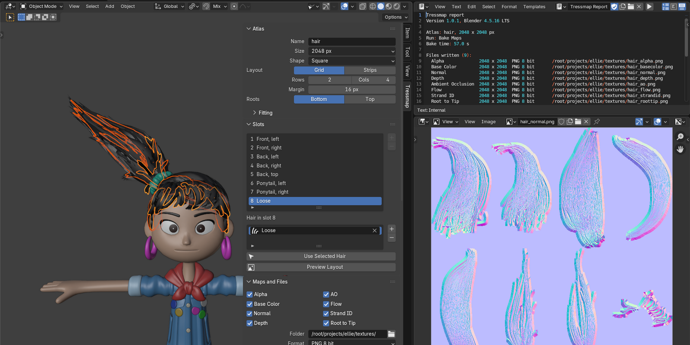
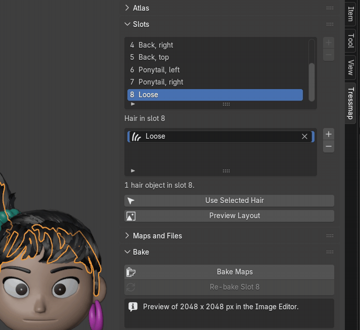
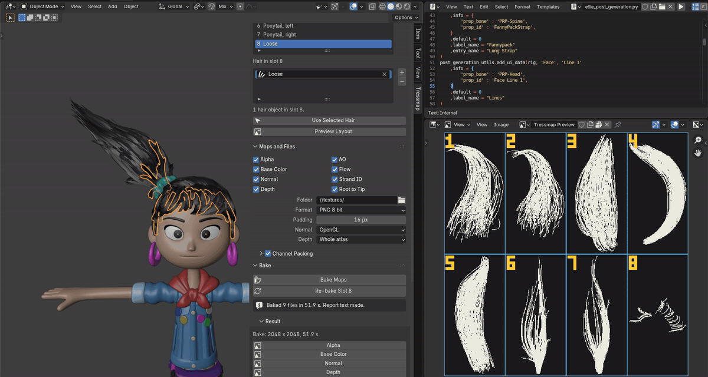
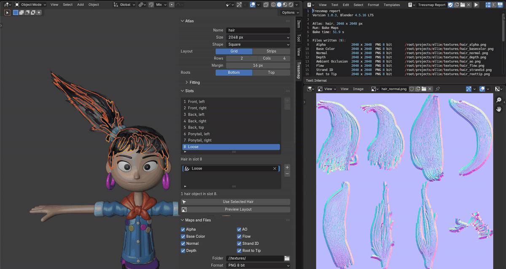
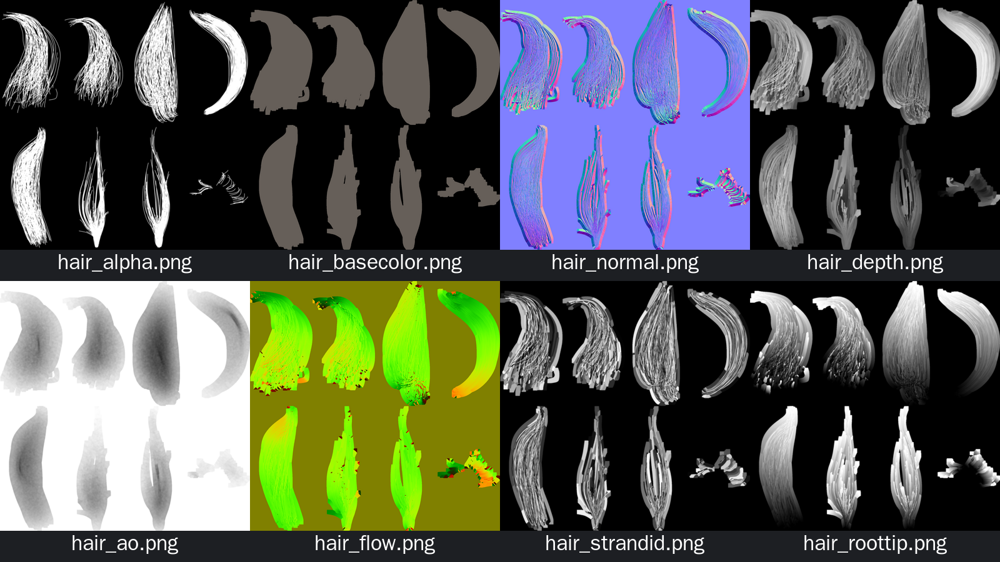

Tressmap for Blender
Need the hair-card textures and don't want to leave Blender for them? Tressmap bakes normal, depth, ambient occlusion, flow, strand ID, alpha, root-to-tip and base color maps from the hair curves you groomed, into one atlas at the size you choose.
$19 once, source included. Buy for $19


Ellie's hair in eight slots, real Blender 4.5.16 window. Credits
- Eight maps in one press, from your own hair curves.
- The size your engine wants, 512 to 8192 px, padded and packed.
- See it before you bake; redo one clump alone.
$19, one-time, source included (GPL-3.0-or-later). Every update included.
Blender 4.2 LTS to 5.3, tested on 4.2.23, 4.5.16, 5.2.4 and 5.3.0 (Linux) · source included · support@ochrestack.com · Polar checkout · 14-day refund if it doesn't work as described and we can't fix it · no license check · details
Watch it work
Ellie's hair is particle hair. We converted it with Blender's Convert to Curves, took seven locks of 150 strands with Separate, kept her 40 loose strands as the eighth, and put one in each slot.






What it does
A grid or vertical strips of slots, one or several hair curves objects each; eight maps as PNG 8 bit, PNG 16 bit or OpenEXR at 512 to 8192 px, square or 2:1, normal in OpenGL or DirectX green; edge padding and Channel Packing with presets; preview cards, Re-bake Slot and a report that lists every file and size. Tressmap makes the textures. It does not groom hair, make cards on a head or write your engine's hair shader.
Details
- Buying: secure checkout by Polar; the download arrives by email; the zip includes the full source. If it doesn't work as described and we can't fix it, email us within 14 days of purchase for a full refund (terms). A studio of up to 10 artists pays $57: email support@ochrestack.com.
- Windows and macOS were not tested, and neither were Unity or Unreal.
- Updates: an update is a new zip, installed the same way (quick start). Tressmap makes no network calls, so it never checks for one; write to support@ochrestack.com for the latest zip.
- Tressmap 1.0.1 reads hair curves objects (Curves Sculpt, Geometry Nodes, or an add-on that outputs hair curves); particle hair needs Convert to Curves first. Tested on Linux in Blender 4.2.23 LTS, 4.5.16 LTS, 5.2.4 LTS and 5.3.0.
- GPL-3.0-or-later. No telemetry, no analytics, no network calls. Support: support@ochrestack.com.
- Limits: hair curves objects only; one slot is one flat clump; Blender answers Esc between the steps of a bake; flow follows the strand on top. All limits, and how we tested.
Install and your first bake: Tressmap quick start. The full manual (README.md) is inside the zip.
Character: Ellie Rig (CC) Blender Foundation | studio.blender.org, Sprite Fright, used under CC BY 4.0. We converted her particle hair to hair curves, cut locks from it and hid her mesh hair in the viewport; her materials and rig are unchanged. Ellie is not included with Tressmap.
$19 once, source included · Polar checkout · 14-day refund if it doesn't work as described and we can't fix it · Blender 4.2 LTS to 5.3, tested on 4.2.23, 4.5.16, 5.2.4 and 5.3.0 (Linux)